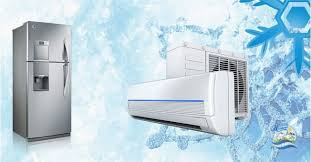

te prepara para la instalación, mantenimiento y reparación de sistemas
de refrigeración y climatización en entornos domésticos, comerciales
e industriales. Puedes especializarte como técnico en centros de
formación técnica o como ingeniero en universidades, adquiriendo
conocimientos en termodinámica, manejo de refrigerantes,
electricidad y diagnóstico de fallas para garantizar la conservación
de productos y el confort ambiental.